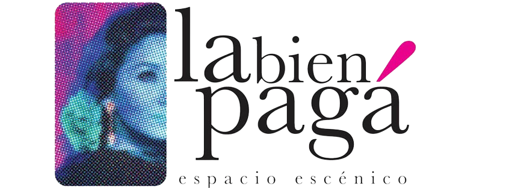
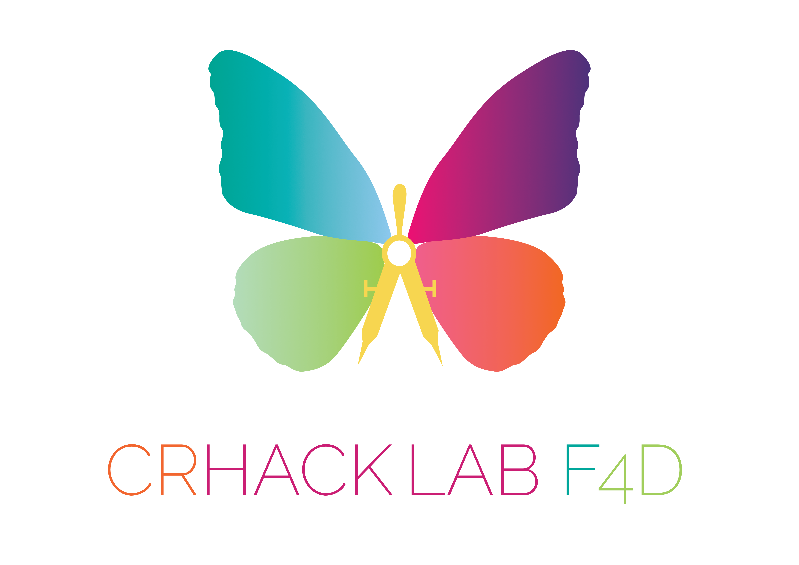
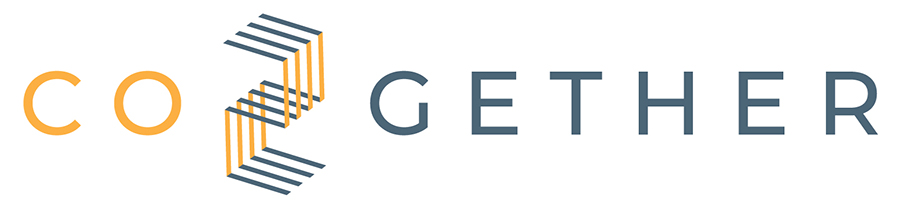
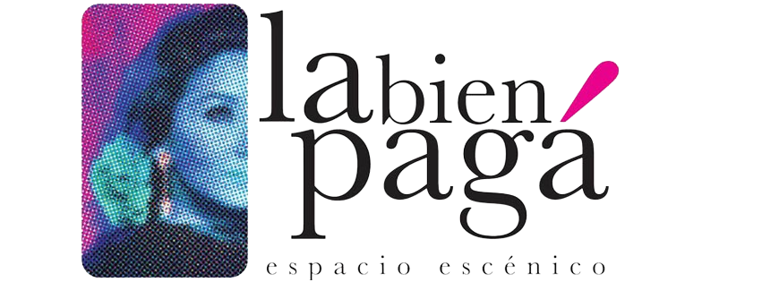
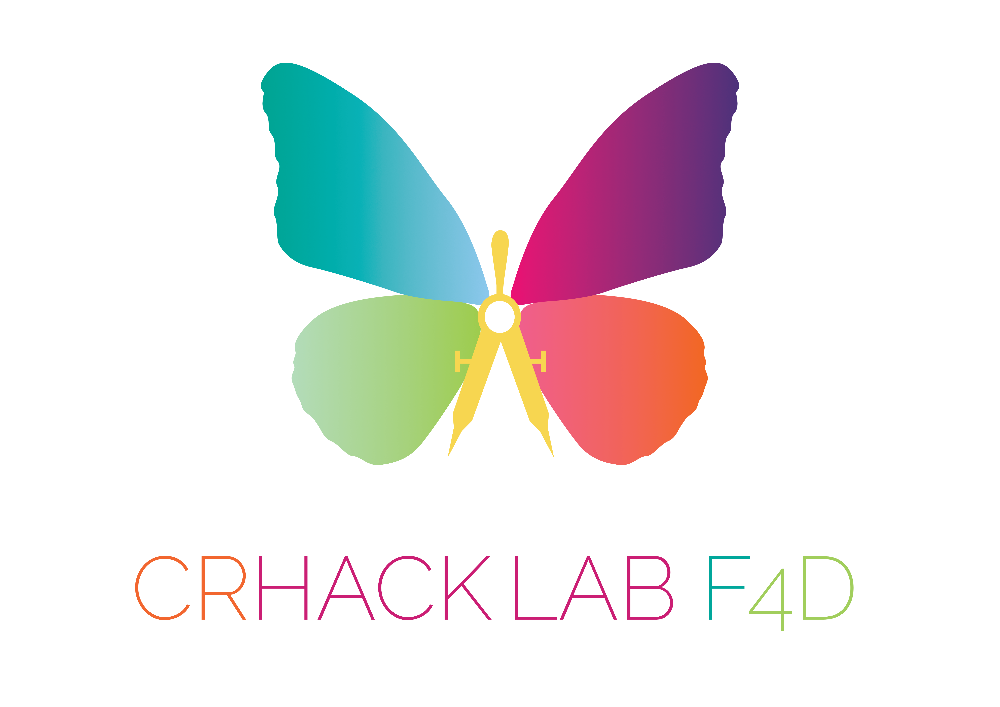
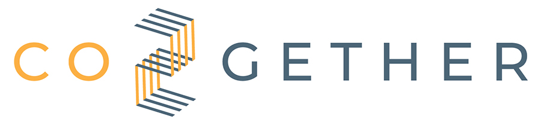

The Eco-Champions Project: A Step Forward Towards Environmental Sustainability in Europe
In the context of the increasing environmental and climate pressures that define our time, the need for concrete and collaborative actions to address global challenges has become ever more evident.
In response to this imperative, the Eco-Champions project has been launched within the framework of the CERV Programme. Co-financed by the European Union and set to run for 24 months, this ambitious initiative aims to promote sustainable waste management within the European Union by actively engaging citizens and communities.
The core objective of Eco-Champions is to mobilise and actively involve citizens and local authorities in a constructive dialogue and practical activities focused on sustainable waste management. The project consortium consists of five partners, coordinated by Connect Brussels (Belgium), including Bond Beter Leefmilieu (Belgium), la Bien Pagá (Spain), Crhack Lab Foligno 4 D (Italy), Co2gether (Greece), and Balkan Forum (Kosovo). Together, they will work to raise awareness and educate citizens and authorities through workshops, training sessions, and hands-on activities.
One of the distinctive features of Eco-Champions is its inclusive and holistic methodology, which will engage citizens of various ages and backgrounds to foster an intergenerational dialogue on crucial environmental issues.
Through this intergenerational approach, the project seeks to create a shared sense of community and responsibility, transcending age barriers to promote a greener and more sustainable future for Europe and beyond.
A key component of this initiative will be the Eco-Festivals, organised in five different cities across the five partner countries. These events will encourage participants not only to compete but also to collaborate in developing innovative and practical solutions for waste management. An inclusive voting process will recognise and reward the most engaged eco-citizens, celebrating their contributions to local and regional environmental well-being.
In alignment with the EU Green Deal’s agenda and priorities, Eco-Champions aims to identify the specific needs for sustainable waste management in various national contexts, employing a robust methodology that ensures tangible and lasting results. The project aspires not only to foster medium- and long-term behavioural change but also to strengthen the democratic and civic fabric of the European Union through active participation.
Ultimately, Eco-Champions strives to contribute to the global fight against climate change and the pursuit of environmental sustainability.
Partners:

 






Funded by the European Union. Views and opinions expressed are however those of the author(s) only and do not necessarily reflect those of the European Union or the Youth Affairs Agency. Neither the European Union nor the granting authority can be held responsible for them.
Needs Analysis for Sustainable Waste Management
The Eco-Champions project has entered a crucial phase involving the collection of essential data to assess the current state of waste management in the participating countries. Project partners are developing specific questionnaires to gather both quantitative data—related to waste production, types, and disposal methods—and qualitative insights through semi-structured surveys aimed at understanding community perceptions, cultural concerns, and suggestions.
The analysis will focus on several key aspects, including the regulatory and policy framework, local specificities, the needs of disabled and elderly individuals, as well as the evaluation of environmental impact and existing infrastructure.
Subsequently, two online events will be organised to establish a structured framework that will systematically and inclusively guide the assessment process, taking into account diverse demographic needs.
This phase represents a crucial step in developing targeted and sustainable strategies, forming the project’s innovative methodology and actively engaging communities in the transition towards more efficient and environmentally friendly waste management practices.